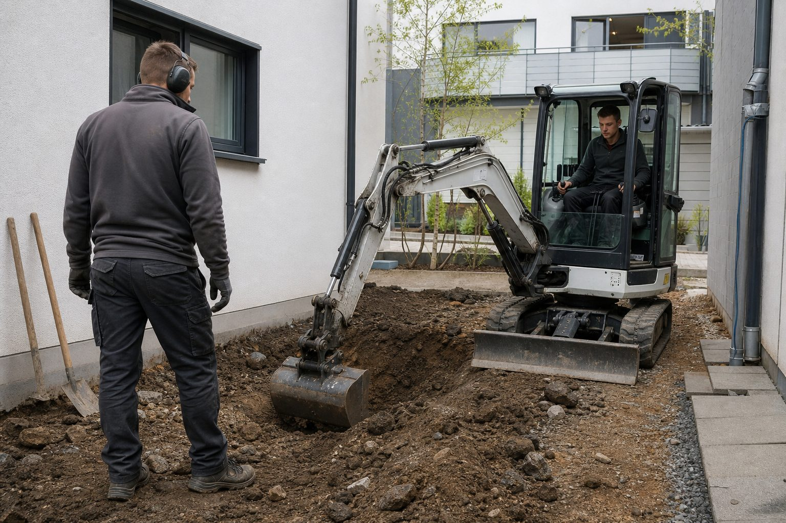

Wacker Neuson EZ17e: Der Elektro-Minibagger, der einen Arbeitstag ohne Steckdose schafft
1,7-Tonnen-Klasse, 23,4 Kilowattstunden Akku, Zero Tail: Der EZ17e ist die Maschine, mit der viele Betriebe zum ersten Mal elektrisch baggern. Was er kann, was er kostet und wo er an Grenzen stößt.

- Batterie mit 23,4 kWh, laut Hersteller ausreichend für einen normalen Arbeitstag ohne Zwischenladen; Laden an jeder Stromquelle von 100 bis 415 Volt.
- Grabtiefe 2,49 Meter, Losbrechkraft 20,5 kN, Betriebsgewicht 1,8 bis 2,2 Tonnen – die Leistungswerte entsprechen dem Diesel-Schwestermodell.
- Lohnt sich für Innenräume, Innenstädte, Nachtarbeit und Ausschreibungen mit Emissionsauflagen; auf dem freien Feld entscheidet der Preis.
- Hersteller
- Wacker Neuson SE, München
- Kategorie
- Elektrischer Zero-Tail-Minibagger, 1,7-t-Klasse
- Antrieb
- Lithium-Ionen-Batterie 23,4 kWh, Betrieb wahlweise im Akku- oder Netzbetrieb
- Leistungsdaten
- Grabtiefe max. 2.490 mm, Grabradius max. 4.060 mm, Losbrechkraft max. 20,5 kN, Betriebsgewicht 1.797 bis 2.152 kg
- Laden
- 100 bis 415 Volt, integrierte Batterieheizung, im Netzbetrieb gleichzeitig laden und arbeiten
- Preis
- Auf Anfrage über Händler oder Miete; deutlich über dem Diesel-Pendant (Herstellerangabe zum Aufpreis liegt uns nicht vor)
- Für wen
- Betriebe mit Aufträgen in Innenräumen, Innenstädten, Nachtbaustellen und emissionsbeschränkten Ausschreibungen
- Stand
- Herstellerangaben, abgerufen September 2026
Unabhängig recherchiert auf Basis von Herstellerangaben und Fachpresse. Keine bezahlte Platzierung, keine Testmuster.
Der EZ17e ist kein Konzeptfahrzeug, sondern seit Jahren im Vermietpark und auf Baustellen unterwegs. Wacker Neuson hat das Diesel-Schwestermodell EZ17 elektrifiziert, ohne die Geometrie zu ändern: gleicher Ausleger, gleiche Grabtiefe, gleicher Zero-Tail-Aufbau, bei dem das Heck beim Schwenken nicht über die Ketten hinausragt. Wer die Maschine kennt, findet sich sofort zurecht.
Was den Unterschied macht
Die Batterie fasst 23,4 Kilowattstunden. Nach Herstellerangaben reicht das für einen normalen Arbeitstag ohne Zwischenladen – im GaLaBau-Alltag mit Pausen, Umsetzen und Handarbeit ist das plausibel, bei durchgehendem Lösen von schwerem Boden nicht. Zwei Details sind für die Praxis entscheidender als die Kapazität: Die Maschine lädt an jeder Stromquelle zwischen 100 und 415 Volt, also auch an der Haushaltssteckdose über Nacht, und sie kann am Kabel arbeiten und dabei laden. Auf einer Innenhof-Baustelle mit Stromanschluss ist die Reichweitenfrage damit erledigt.
Eine integrierte Batterieheizung sorgt dafür, dass der Akku auch im Winter geladen werden kann. Das wartungsfreie Batteriesystem ist patentiert; Ölwechsel, Filter und Kühlflüssigkeit für den Motor entfallen.
Leistung
Grabtiefe 2,49 Meter, Grabradius 4,06 Meter, Losbrechkraft 20,5 kN, Betriebsgewicht je nach Ausstattung zwischen 1,8 und 2,2 Tonnen: Das sind die Werte der Diesel-Klasse. Der Elektromotor liefert sein Drehmoment sofort, was beim Anreißen von verdichtetem Boden angenehm ist. Was fehlt, ist das Motorgeräusch – wer neben der Maschine arbeitet, hört Hydraulik und Ketten, nicht mehr. In Wohngebieten und bei Nachtarbeit ist das der eigentliche Grund, warum Betriebe die Maschine anfragen.
Grenzen
Die Ladeinfrastruktur auf der Baustelle ist die erste Grenze: Ohne Stromanschluss braucht die Maschine abends einen Platz an der Steckdose, und der Transport zum Hof kostet Zeit. Die zweite ist das Gewicht beim Transport – mit Anhängerklasse BE ist die 1,7-Tonnen-Klasse gut zu bewegen, mit B96 wird es eng. Die dritte ist der Preis, der ohne konkrete Aufträge schwer zu rechtfertigen ist.
Für wen
Für Betriebe mit Innenraum- und Innenstadtprojekten, für Kommunalaufträge mit Emissionsvorgaben, für Nachtbaustellen und für alle, die ihren Fuhrpark in den nächsten Jahren ohnehin umstellen müssen. Für den reinen Privatgartenbetrieb im ländlichen Raum ist der Diesel vorerst die wirtschaftlichere Wahl – bis die Preise fallen oder die Auflagen steigen.
Quellen
- Wacker Neuson: Elektrischer Zero Tail Kettenbagger EZ17e (technische Daten, Ladekonzept) – www.wackerneuson.de/zero-emission/elektro-bagger/ez17e
- electrive.net: Wacker Neuson zeigt E-Minibagger EZ17e, 13. August 2020 – www.electrive.net/2020/08/13/wacker-neuson-zeigt-e-minibagger-ez17e/
- HKL Baumaschinen: Wacker Neuson EZ17e (Betriebsgewicht, Abmessungen) – www.hkl-baumaschinen.de/neuson-ez17e
Kommentare
Noch keine Kommentare. Schreiben Sie den ersten.

Bobcat E10e: Ein-Tonnen-Bagger für Türen, Keller und Innenhöfe
710 Millimeter breit, knapp 1,2 Tonnen schwer, elektrisch: Der E10e passt durch jede Tür und arbeitet, wo kein Diesel darf. Was er leistet, wie er lädt und für welche Betriebe er die Miete wert ist.

STIHL AP 500 S: Der Akku, der das Profi-System ausdauernd macht
36 Volt, 8,8 Amperestunden, 337 Wattstunden, 1,9 Kilogramm – und nach Herstellerangaben doppelt so viele Ladezyklen wie bisherige Akkus. Was das für Betriebe bedeutet, die ihre Kolonnen auf Akku umstellen.

Husqvarna CEORA: Der Mähroboter für 50.000 Quadratmeter – ohne Begrenzungskabel
Sportplätze, Parks, Gewerbeflächen: Der CEORA mäht bis zu fünf Hektar in zwei Tagen, navigiert per Satellit auf zwei bis drei Zentimeter genau und ersetzt keinen Landschaftsgärtner – aber viele Mähstunden.